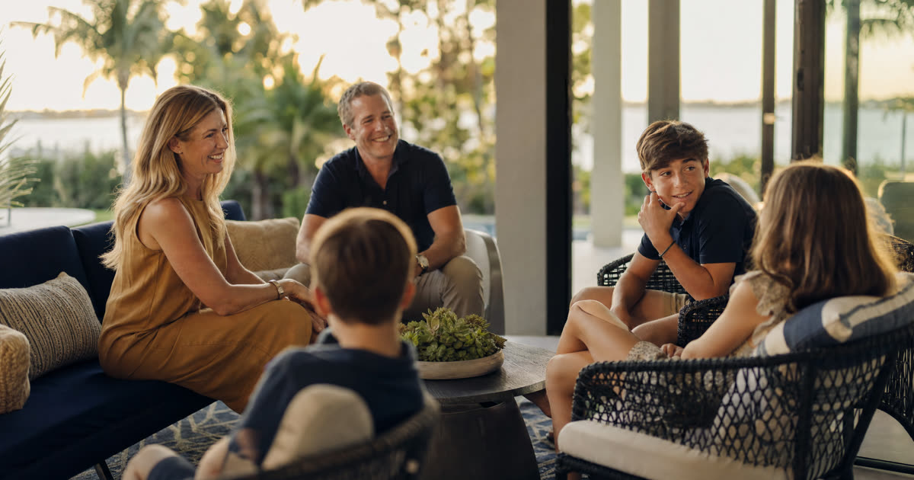

Estelle's situation: why the choice isn't automatic
Estelle is 76, lives in Fort Pierce, and has never married or had children. (Estelle is a composite drawn from the kinds of clients I meet regularly, not an actual client.) She owns her home outright, has two nieces she is close to in different ways, and has attended the same church for decades. When there is a spouse and kids, the beneficiary question often answers itself. When there isn't, the owner has real decisions to make, and no default in Florida law fills the gap for you.
A lady bird deed lets Estelle keep full control of her home for as long as she lives, including the right to sell it, mortgage it, or change her mind entirely, and it passes the house to whoever she names at her death without going through probate. Because she has no spouse and no minor children, the constitutional rule that normally restricts how homestead property can be left doesn't limit her here. She is free to name whoever she wants.
Have this exact situation? Talk it through with a Florida attorney — the 20-minute consultation is free.
Book Free Consult or call (888) 388-8445Naming individuals: the two nieces, equally or not
Estelle can name both nieces as co-beneficiaries, and Florida law allows unequal shares just as easily as equal ones. If she wants each niece to receive half the house, the deed says so. If one niece has been more involved in her life, or has a greater financial need, Estelle can leave that niece a larger share, or the whole property, without needing to justify the decision to anyone.
- Equal shares keep things simple and are often the right fit when both relationships feel comparable.
- Unequal shares are legal and common, but worth discussing honestly, since surprises after a death can strain family relationships even when the deed itself is perfectly valid.
- One niece only is also an option if Estelle's closeness to one is clearly greater, though she should think through how that will land with the other.
Whatever she decides, the deed should spell out exactly how the two would hold title together (as equal co-owners is typical) so there's no ambiguity for a title company later.
Naming her church or another charity
A Florida lady bird deed can name a charitable organization as the remainder beneficiary just as it can name a person. If Estelle wants her church to receive the house, or a share of it, the deed identifies the church by its full legal name so the transfer is unambiguous. This can work cleanly for a house the church intends to sell and use the proceeds from, though a nonprofit receiving real estate should generally be consulted in advance so it can prepare to accept and dispose of the property.
Charities and individuals can also be combined on the same deed, for example splitting the home between the two nieces and the church in whatever proportions Estelle chooses.
Naming a trust instead of naming people directly
Some single homeowners without children choose to name a revocable living trust as the lady bird deed beneficiary rather than naming individuals or a charity directly. The trust document then dictates who actually receives the house, and in what shares, which is separate from the deed itself. This adds a layer of flexibility: Estelle could update her trust's instructions over time without recording a new deed, as long as the trust remains the named beneficiary on the deed.
For a simpler situation, naming the nieces and the church directly on the deed is often more straightforward and avoids the cost of maintaining a separate trust.
Contingent beneficiaries: what if a niece doesn't outlive her?
Because Estelle has no children, there is no automatic line of descendants to fall back on if a named beneficiary dies before her. This makes contingent, or backup, beneficiaries especially important. If Estelle names both nieces as primary beneficiaries, she should also name a contingent beneficiary (perhaps the surviving niece taking the full property, or the church stepping in) in case one or both nieces predecease her.
The deed Estelle recorded, and coordinating the rest of her plan
In our fictional example, Estelle ultimately named her two nieces as co-beneficiaries in equal shares, with her church named as the contingent beneficiary if neither niece survives her. She kept full control of the home during her lifetime, meaning she can still sell it, refinance it, or change the beneficiaries entirely if her circumstances or relationships shift.
A lady bird deed works alongside a will, not instead of one. Estelle's will still governs anything the deed doesn't cover, like personal belongings, bank accounts without a beneficiary designation, or the house itself if she sells it and never records a replacement deed. She also reviewed the beneficiary designations on her life insurance and retirement accounts, since those pass outside the deed and outside the will entirely. Every witness signature, notary acknowledgment, and county recording requirement under Florida law was followed carefully, since a defect in execution can undermine the whole plan.
Truestead prepares Florida lady bird deeds starting at $199 for a self-guided deed, or $399 for an attorney-prepared deed that includes recording, and either option can accommodate the individual, charitable, or trust beneficiary structures described here.
Frequently Asked Questions
The Truestead Takeaway
For a single Floridian with no children like Estelle, a lady bird deed offers real freedom: nieces, a beloved church, a trust, or any combination can be named, in equal or unequal shares, with contingent beneficiaries filling the gap that a natural line of descendants would otherwise cover. The deed itself is only one piece of the plan, and it works best when it's coordinated with a will and with beneficiary designations on other accounts. If you're weighing similar choices for your own home, it's worth having a Florida attorney review your specific relationships and wishes before you record anything.
Sources
- The Florida Bar, "Lady Bird Deeds," The Florida Bar Journal, January 7, 2019
- Alper Law, "How Florida Lady Bird Deeds Work, Pros and Cons, and Costs," verified September 2026
- Zoecklein Law PA, "Florida Lady Bird Deed: How It Works, Costs & Pitfalls (2026)," verified September 2026
- Get Lady Bird Deed, "Managing Beneficiaries on Your Florida Lady Bird Deed," July 6, 2026
- Get Lady Bird Deed, "Can a Lady Bird Deed have Multiple Beneficiaries in Florida?" May 18, 2026
Have a child turning 18? Get the free 18 & Protected packet — the legal documents every Florida 18-year-old needs.
Get the Free PacketGet Your Florida Lady Bird Deed
Truestead prepares Florida Lady Bird (enhanced life estate) deeds: $199 self-guided from your answers, or $399 attorney-prepared and recorded for you, with the homestead and documentary-stamp guardrails the form sites skip.
Start Your Lady Bird Deed →This article is for general informational purposes only and does not constitute legal advice, nor does reading it create an attorney-client relationship. Florida estate, elder, probate, and real estate law are fact-specific and change over time. Consult a licensed Florida attorney about your individual circumstances. Arthur Simpson, Esq. is licensed to practice law in the State of Florida. Attorney advertising.
Talk to a Florida Attorney — Free 20-Minute Consultation
Pick a time below. No obligation, no pressure — just answers.